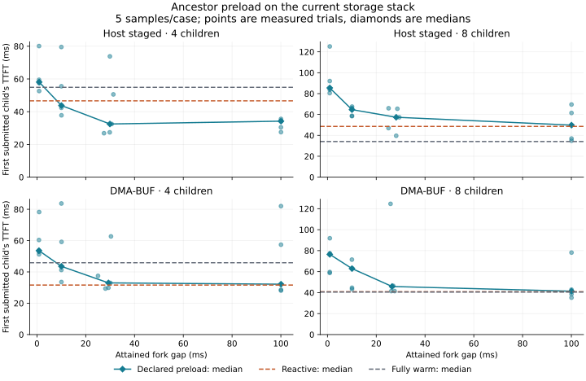

KMesh
An application often knows that several upcoming requests will reuse the same context. KMesh investigates how to give that knowledge to vLLM and LMCache early enough to prepare the cached state, share it and keep it available for the requests that need it.
KMesh is an existing experimental codebase being developed alongside DMA-BUF-enabled LMCache. This page presents the current implementation and experiments: what ordinary prefix caching and Cascade already provide, what KMesh adds, and which benefits the measurements support. Each experiment isolates a mechanism; the CPU allocator, GPU-resident attention and retention controls do not themselves perform DMA-BUF storage transfers.
Start here: where KMesh fits
Example: an agent reads a document, then launches five follow-up requests about it. Those five requests are the children. The cached computation for their common context is the ancestor; the related requests form a family. A five-child burst means submitting five follow-ups together. It does not mean five GPUs or five models. The experiments use synthetic token sequences to control this relationship.
| Mechanism | What it does | Role in this work |
|---|---|---|
| vLLM prefix caching | Matching requests reuse completed KV blocks already in the engine. | Existing physical sharing; KMesh builds on it. |
| Cascade attention | Process attention against a shared prefix efficiently, then combine it with each request's private suffix. | Existing attention optimization, measured separately in section 12. |
| KMesh singleflight | Let one request restore an ancestor into the engine while matching followers wait and then share it. | A load-coalescing feature in the LMCache connector, introduced and tested in section 14. |
| KMesh family declaration | Tell the connector that related requests are coming and coordinate preparation before they arrive. | A prototype using a one-token warm request; section 15 measures the lead time and cost. |
| Prefetch and retention | Fetch state before demand, or keep it available through a gap between uses. | External-cache retention avoids repeated NVMe reads; engine retention must pay for the capacity it occupies. |
| DMA-BUF transfer path | Restore NVMe data into a registered GPU buffer on a qualified host. | Changes how bytes move. It does not choose what to fetch or deduplicate requests; the tested path still copies from that buffer into the engine cache. |
How this extends the Cascade idea
Cascade supplies an important part of shared-context inference: efficient attention over shared KV. KMesh explores application-informed coordination around that computation, including preparation, ownership and lifetime. The Cascade post already describes multi-level shared prefixes implemented in MLC-Serving, and FlashInfer exposes a multi-level cascade API. Those levels are nested contexts: a shared system prompt, a document shared by a subgroup, then private questions. KMesh's additional direction is advance knowledge of when related requests will need state and how long to keep it.
Family membership expresses intended reuse; compatibility decides whether bytes can actually be shared. Matching model/cache identity and causal context still matter. A common passage after different private histories is not automatically the same KV. Extending the contract to other inference objects is a research goal; the current declaration prototype is not a general native vLLM object or fork API.
What is established so far: ordinary vLLM shares resident exact prefixes; KMesh singleflight removes duplicate engine ancestors in its controlled comparison; retained external cache reduces repeated storage reads. Preload latency is mixed, and a family hold can hurt other requests under pressure. Cascade and DMA-BUF results come from separate profiles and must not be added together as a combined speedup.
1. Two redundancies, one missing structure
Agentic inference exposes at least two distinct forms of KV-cache redundancy, and it is worth keeping them separate. DualPath reports high cross-turn reuse in long-context, short-append agent trajectories — the same trajectory revisiting most of its own context turn after turn. TokenDance reports high cross-agent KV-block similarity after position-independent recovery in synchronized All-Gather rounds — sibling agents that share most of a round's state. The former is temporal reuse within a trajectory; the latter is sibling-state redundancy across concurrent requests. They are related architectural pressures, not the same measurement or reuse mechanism, and collapsing them into a single "shared cache" number obscures both.
What they share is the diagnosis. Request-centric execution usually flattens round, segment, branch, and lineage structure before it reaches the runtime. The serving engine sees token streams and has to rediscover relationships the agent orchestrator already knows — or misses them and recomputes state it could have reused. The opportunity is not that a clever cache would help; it is that the structure needed to exploit reuse safely is discarded at the door.
2. What TokenDance and ForkKV show
Two lines of work recover that structure deliberately, and both point past their own scope.
TokenDance lifts the unit of optimization from a single request to an agentic round. It is built from four separable mechanisms: round-aware segment indexing that preserves logical block boundaries even at different absolute positions; collective position-independent KV reuse that pays the recovery cost once per round instead of once per request; a Master–Mirror diff-aware storage scheme that encodes sibling caches as sparse differences against one dense master; and fused sparse restoration on transfer. KMesh implements an independent baseline of segment-aware collective recovery and exact family storage before testing broader abstractions. The bounded baseline below covers selected mechanisms; it is not a reproduction of the paper's complete serving system.
ForkKV shows the opportunity is larger than the KV cache alone. Multi-LoRA agents co-hosted on one base model diverge in their KV because each adapter changes the activations for the same context, which defeats naive prefix caching. ForkKV borrows process semantics directly — fork the massive shared cache and apply copy-on-write for the lightweight, agent-specific remainder, tracked by a radix tree and reconstructed on chip. The lesson is that the shareable unit is the keyed inference state: the KV, the adapter-affected activations, and the prefixes they hang on.
3. The generalization: keyed inference state
The same shared-trunk, per-branch-diff structure is not agentic-specific. Chain-of-thought reasoning revisits and branches its own context; test-time scaling forks a common prefix into parallel samples, best-of-N, or tree search; speculative decoding branches and prunes. These are the same pattern that TokenDance and ForkKV exploit for agents, and there is no reason the machinery should stay agent-specific.
KMesh investigates whether an inference engine — vLLM first — can expose explicit, keyed state relationships that let recovery, scheduling, storage, and later memory tiering operate on groups of related requests. The unit is the keyed inference state: a per-context artifact keyed by the context it derives from, so a workload that provably shares that context can share, fork, or diff the state instead of recomputing it. Agentic serving, chain-of-thought, and test-time scaling then become callers of one mechanism rather than three separate optimizations. Whether that unification holds is a question to answer with an implementation, not to assume.
4. The long-term architecture is unresolved
The long-term architecture is intentionally unresolved, and saying so is the point. Linux virtual-memory primitives, accelerator memory, CXL tiers, and a generalized inference-object model may eventually matter — but those are hypotheses, and announcing that the operating system needs new interfaces before an inference engine has shown which mechanism is actually missing puts the cathedral before the door. The immediate work is empirical: use a real vLLM implementation to identify the smallest reusable abstractions and the precise mechanisms current runtimes lack.
One interface question is already concrete. TokenDance carries segment structure with a separator token in the prompt; that is a fine paper-compatibility mode, but a reasoning or sampling orchestrator already knows its own branch and segment boundaries and should not have to inject control tokens into a model prompt to tell the runtime about them. So the mechanism should consume explicit segment metadata, with the in-prompt separator as one encoding of it rather than the internal contract. Getting that boundary right is what keeps a TokenDance reproduction from foreclosing chain-of-thought support later.
5. What the implementation tests
The implementation separates collective recovery, physical prefix sharing, attention computation, external restoration and future-use coordination. The TokenDance-style baseline checks segment-aware recovery and Master–Mirror storage under controlled All-Gather workloads. The serving, DMA-BUF, singleflight and family experiments then test their own mechanisms with explicit controls.
| Stage | What it establishes |
|---|---|
| Baselines | Ordinary vLLM with prefix caching off and on, and the existing serial position-independent recovery path, measured on controlled workloads. |
| Observer | Typed request and segment metadata, compatibility grouping, and structural-overlap metrics that change nothing about scheduling or output — reporting how much workload structure the engine could exploit before any cache is touched. |
| Collective reuse | Group recovery driven under one plan, validated to agree with the serial recovery baseline within declared tolerances, with operation counters that show whether the work is actually shared rather than merely batched. |
| Master–Mirror | A codec that encodes a family of recovered caches as one dense master plus sparse mirror diffs, with exact round-trip tests and real serialized-byte accounting — not a changed-block oracle. |
Exact-prefix forks and family declarations test the extension toward chain-of-thought and other test-time-scaling branches. Results on a single workstation-class GPU are labeled as functional or trend results; a comparison against the paper's numbers waits for comparable data-center-class hardware, with every material difference disclosed. The standard is not that the code runs — it is that the workload is controlled, the mechanism is observable, the comparison is fair, the fallback is safe, and the claim says no more than the evidence.
6. The baseline we implement
The controlled workload has five synthetic 512-token prompts containing the same content at different absolute positions. One request primes LMCache; four siblings then recover 416 tokens each. That is 81.25% realized sharing after segment rounding from the nominal 80% generator setting. There are no matching prompt-aligned full blocks, so ordinary prefix reuse cannot explain the recovery.
The vLLM and LMCache branches execute collective position-independent recovery: they adjust retrieved keys for each sibling's positions and batch rotary-position and difference-analysis calls across compatible requests. Selection masks, attention and destination slots remain request-local. A separate Master–Mirror codec stores one full cache and exact differences for the other family members. Its encoded-byte measurement runs offline on captured tensors.
| Case | Purpose |
|---|---|
| ordinary / serial oracle | Record full recomputation and the existing per-request recovery path as separate references. |
| collective forward / reverse | Check collective recovery, request-order stability and request-local masks. Raw numerical parity is checked between serial and forward collective captures. |
| cold miss / zero sharing | Require safe ordinary computation when there is nothing eligible to recover. |
| incompatible partition | Decline a group whose compatibility metadata does not permit collective recovery. |
| sibling failure | Inject a failure and check isolation, fallback, ownership release and terminal cleanup. |
The independent verifier reloads the raw tensors and checks their hashes, K/V bits, logits, masks, operation ledgers and cleanup. A successful launcher exit or a self-reported driver flag does not establish a result.
7. Reproduce the baseline
The current CUDA profile in the reproducer README runs the eight-case recovery experiment on one H100 with BF16, eager execution and Triton attention. The vLLM and LMCache branches include the current integration work; this particular control uses LocalCPU storage to isolate recovery correctness. It does not exercise DMA-BUF transfers.
| Component | Source for this experiment |
|---|---|
| vLLM | 21ad334d124e |
| LMCache | 643f8ca3962e |
Both branches are named 2026-10-16-feature-kmesh-current-validation.
The profile
pins source trees, the H100 runtime and model revision. Follow the README's
image and compiler preparation before running:
bash tools/reproduce/tokendance/prepare_cuda.sh /workspace/kmesh-runtime
. /workspace/kmesh-runtime/run.env
make defconfig-tokendance-cuda
make tokendance-plan
TOKENDANCE_OUTPUT=/workspace/tokendance-h100 make tokendance-gpuThe model is Qwen/Qwen2.5-0.5B-Instruct at revision
7ae557604adf67be50417f59c2c2f167def9a775. Set source and model paths
explicitly and use a fresh output directory. The launcher checks contracts
and resolved configuration, runs each case in a fresh process, and writes raw
tensors, semantic ledgers, an independent verification and offline codec results.
Instrumentation makes these capture times unsuitable for speed comparisons.
Validate the workload or recheck a capture on CPU
make defconfig-tokendance-cpu
make tokendance-plan
make
make tokendance-testThis CPU profile validates the synthetic workload and reports
executed_kv_reuse: false; it executes no model. To independently
verify a current GPU capture, use Python with PyTorch and safetensors:
TOKENDANCE_BUNDLE=/path/to/eight-case-capture \
TOKENDANCE_SOURCE_PAIR=current \
TOKENDANCE_OUTPUT=/path/to/fresh-verification \
make tokendance-verify TOKENDANCE_PY=/path/to/torch-env/bin/pythonInspect verified.json for recovery checks and
codec/codec.json for actual dense and encoded bytes. The GPU run's
offline codec writes and reloads the family, requires bitwise restoration,
and rejects a deliberately corrupted payload. These are correctness and
storage-size measurements, not online GPU capacity or transfer results.
8. Results and limits
H100 recovery experiment, October 16, 2026: all eight cases and the independent verifier pass on the component pins above. Serial and collective K/V match bit for bit, with zero maximum logit difference. The offline codec restores all four members exactly and rejects corruption. Full recomputation and recovery are not numerically equivalent. The H100 result record binds these findings to the exact sources and verifier digest.
independently verified
four recovered siblings
offline family storage
| Measurement | Result | What it establishes |
|---|---|---|
| Serial vs collective | Raw K/V bits identical; maximum absolute logit difference 0.0. | Batching preserves this serial recovery baseline for four siblings in this synthetic case. |
| Order, fallback, cleanup | All eight cases pass their independent checks. | Reversing request order, missing data, incompatible groups and injected failure obey the bounded contract. |
| Ordinary vs serial | Maximum absolute logit difference 0.5625; numerical diagnostic fails. | Recovery is not numerically equivalent to full recomputation. That parity is not an accepted claim. |
| Family codec | 17,506,917 encoded bytes / 25,165,824 dense bytes = 69.566% of dense size. | Actual serialized storage saves 30.434%, including metadata, with exact restoration and corruption rejection. |
The dense byte count is four siblings × two K/V planes × 512 tokens × 24 layers × 128 features × two BF16 bytes. Shared spans align by content before encoding. The current CUDA run includes offline codec measurement on the captured tensors. It does not measure how many GPU pages an online engine can share.
The collective ledger records 24 cached-key recovery operations, 24 model rotary operations and one difference-analysis operation per participating member. Those are participation records for shared calls, not separate calls to sum across members. They demonstrate batching; they do not demonstrate constant work or a latency improvement.
9. Do reasoning forks need a new memory manager?
The next question after the recovery baseline is simpler: could explicit tree ownership save KV-cache blocks during test-time scaling? Here a child is its parent's exact token sequence plus an independent tail. A common suffix after different private histories is a different causal context and cannot establish exact sharing.
Measured on 2026-10-16: stock vLLM automatic prefix caching
already reaches the fork-oracle block count in the tested trees while the
ancestor remains cached. The experiment drives the real
KVCacheManager on CPU and records actual block IDs. It treats
allocation as completed prefill, without a model, scheduler, KV tensors or GPU.
The matrix covers five tree shapes, 25 scenarios and six eviction points.
The serving replay below checks the real model and scheduler separately.
| Primary fork tree | Written blocks | Peak pool usage | Failed admissions |
|---|---|---|---|
| Concurrent siblings, prefix cache on | 416 | 417 | 0 |
| Concurrent siblings, prefix cache off | 1,696 | 1,441 | 0 |
| 520-block pool, prefix cache on | 416 | 417 | 0 |
| 520-block pool, prefix cache off | 544 | 289 | 4 |
The primary tree has a 4,096-token ancestor and five 512-token tails, using 16-token blocks. Sharing needs 256 ancestor blocks + 5 × 32 tail blocks = 416. Independent root-to-leaf copies write 256 + 5 × 288 = 1,696 blocks over the tree lifetime. Written blocks accumulate simulated prefill work; peak pool usage measures allocator metadata at one instant, including the reserved null block. The parent is freed before its children arrive. Four failed admissions explain the smaller write count in the uncached pressure control.
Non-aligned forks also reach their block oracle. A 4,101-token ancestor with five 509-token tails writes 422 blocks but recomputes five ancestor boundary tokens per child, 25 total. An explicit fork could clone that partial block; the tested capacity is the same. Tests check that full ancestor block IDs alias while sibling writable tails remain private.
Eviction exposes a separate cost. After unrelated traffic churns a 1,024-block pool, churn fractions 0, 0.25 and 0.50 preserve all 4,096 ancestor tokens for all five children. At 0.75, the first child hits 4,080 tokens and the next four hit 4,096. At 1.00 and 1.50, the first child misses the ancestor entirely and the next four hit fully. In this metadata admission sequence, the first child's simulated prefill repopulates the lost blocks. This does not establish a universal bound under interleaved traffic or preemption.
The current capture uses the serving branch and CUDA software environment with GPU visibility disabled. All 25 scenarios pass, and all 174 prefix-cache tests pass without skips. The allocator capture records the observed block IDs and accounting.
Reproduce this allocator check
Follow the
current allocator instructions.
Use vLLM 1b76bf9dd9d52efbd75fb89bf2619898d8f01233 from
the serving branch.
This adds the benchmark and tests while using the production memory manager.
LMCache is not involved in the allocator check.
make defconfig-kmesh-fork-accounting-current
make kmesh-fork-plan
make kmesh-fork-test
export KMESH_FORK_VLLM_SOURCE=/absolute/path/to/pinned-vllm
export KMESH_FORK_PYTHON=/absolute/path/to/prepared-venv/bin/python
export KMESH_FORK_WHEEL_PACKAGE=/absolute/path/to/site-packages/vllm
export KMESH_FORK_OUTPUT=/path/to/fresh-fork-results
make
KMESH_FORK_OUTPUT=/path/to/fresh-contract-results make kmesh-fork-contractsThe pinned environment uses Python 3.13.15, PyTorch
2.13.0+cu130 and matching vLLM native extensions. The runner checks
source identity, imports and runtime versions, hides GPUs and verifies the
output independently. The workload uses seed 20260805 and two
OpenMP threads.
10. Does sharing survive real serving?
Yes, for this exact-prefix fork tree. The H100 serving experiment runs seven cases on the current vLLM branch. All cases and the independent block-table verifier pass. A warm 4,096-token ancestor is physically shared by all five children; their writable tails remain separate. This tests real model execution and scheduler admission, complementing the CPU allocator check.
What creates the shared ancestor?
vLLM's automatic prefix caching (APC) creates the physical sharing. The reproducer submits five ordinary requests. Each contains the same 4,096 token IDs, followed by a different 512-token tail. There is no special request-fork operation or family declaration in this replay.
Within one engine, vLLM hashes each complete token block together with the preceding prefix's hash and relevant cache identity. Once its KV data has been computed, the block enters the prefix-cache index. A request with the same prefix finds that block and acquires a reference to the same physical block ID. Reference counts protect blocks while requests use them. Each divergent suffix receives separate writable blocks.
Child A block table: [shared ancestor blocks] + [private A blocks]
Child B block table: [shared ancestor blocks] + [private B blocks]
Child C block table: [shared ancestor blocks] + [private C blocks]The harness supplies matching token prefixes; the production vLLM allocator supplies the sharing. See the pinned source for block hashing, prefix lookup and reference acquisition. Only complete cached blocks can be reused. Different earlier tokens, incompatible cache identities or eviction can prevent a hit.
This result establishes exact-prefix capacity sharing inside one engine. It does not establish cross-engine sharing or reuse of a span after a different private history. Each child can still read the shared KV data again during attention. Cascade attention addresses repeated attention reads; DMA-BUF storage restoration addresses a separate transfer path.
| Serving case | Child prefix hits, tokens | Peak used pool blocks |
|---|---|---|
| Warm parent, cache on | 4,096 × 5 | 437 |
| Warm parent, cache off | 0 × 5 | 1,461 |
| Parent and children in one burst | 4,096 × 5 | 423 |
| Cold sibling burst | 0, then 4,096 × 4 | 422 |
| Half-pool churn | 4,096 × 5 | 513 |
| Full-pool churn | 0, then 4,096 × 4 | 897 |
| Fork after parent decode | 4,208; 4,224; 4,224 | 364 |
The warm case observes shared prefix IDs in all ten live sibling pairs. Its peak includes the null block and 20 child decode blocks beyond the CPU allocator's 417-block peak. With caching off, sibling block tables are disjoint. Both controls produce the same generated token IDs for the parent and all five children in this run.
A cold burst or full-pool churn makes one child compute the ancestor before the other four reuse it. The decode fork uses the parent's actual 128 generated tokens: the first child fills the last incomplete 16-token block, and the other two hit the complete 4,224-token prefix. These outcomes are specific to the tested workload and scheduling; they do not establish a bound under repeated interleaved eviction or preemption.
Reproduce the serving replay
Use the current CUDA preparation instructions in the baseline README, then run these commands in a GPU reservation or on an explicitly owned pod:
. /workspace/kmesh-runtime/run.env
make defconfig-kmesh-serving-cuda
make kmesh-serving-plan
KMESH_SERVING_OUTPUT=/workspace/serving-forks make
make kmesh-fork-testThe serving instructions
describe the seven fresh processes and independent CPU recheck. The
sanitized result binds the source,
script and raw-result digests. The model is
Qwen/Qwen2.5-0.5B-Instruct at the baseline's pinned revision.
Runtime is Python 3.13.15, PyTorch
2.13.0+cu130, CUDA 13.0 and vLLM
0.30.1rc1.dev624+g84bcbc626, BF16 and eager execution with two
OpenMP threads. Stock defaults resolve to FlashAttention, 16,384 maximum
batched tokens, 1,024 maximum sequences, chunked prefill and asynchronous
scheduling. The recorder checks allocation/free boundaries and also retains
five-millisecond pool samples.
11. Does DMA-BUF reduce offloaded-ancestor latency?
Yes for transport readiness and a single restored child in this workload. Measured on October 17, 2026, with an RTX 4090 and the DMA-BUF-enabled stack, DMA-BUF reduces median GPU-consumer readiness by 16.3% for a 48 MiB ancestor and single-child time to first token by 6.4%. The five-child burst has no stable latency benefit. All strict restoration and numerical gates pass with INFO logging.
| One 48 MiB ancestor restore | Host staging, p50 / p95 | GPU DMA-BUF, p50 / p95 |
|---|---|---|
| Adapter load complete | 8.063 / 8.204 ms | 8.023 / 8.160 ms |
| GPU consumer ready | 11.006 / 11.165 ms | 9.211 / 9.364 ms |
In everyday terms: the 48 MiB ancestor is a saved bundle of model state for the shared context. Restoring that bundle and completing a small GPU operation that reads it takes 9.211 ms with DMA-BUF versus 11.006 ms with host staging: about 1.8 ms less on this measured path, or 16.3%. This table measures one bundle being restored and consumed, not five children generating answers. The median (p50) is the middle run; p95 is the time at or below which 95% of the measured runs finish.
Four pairs alternate staged/direct order, with 100 measured restores per
arm in each pair, giving 400 measured restores per arm. Five warmups per cell
are excluded from timing summaries. Complete payload checks pass, and both
deliberately corrupted payloads are rejected. The native
submission/completion journal proves dmabuf_fixed versus
host_fixed, with complete bytes and drained ownership.
The adapter submits all sixteen chunks, waits for completion, then copies them into a GPU consumer that reduces every byte. The first timer ends at adapter completion; the second ends at the GPU consumer fence. Full byte comparison and SHA256 run outside timing. Destinations are poisoned before every restore. SSD ranges and registered mappings are warm. These measurements describe complete transfer paths; physical NVMe command splitting was not matched or traced.
What the model checks establish
The integration uses the production LMCacheMPConnector.
One arm restores an owned NVMe file into registered host memory and copies
to the engine. The other restores into a registered GPU DMA-BUF arena, then
copies KV into the engine cache. Both test cold external-cache restoration.
The resident prefix-sharing control and the CPU-backed shifted-span recovery
control isolate different mechanisms.
The serving comparison uses batch-invariant kernels, INFO logging and four alternating pairs, with 20 measured families per fanout and arm in each pair. Every one of its 1,152 continuation observations, including smoke checks and warmups, restores the full 4,096-token ancestor, matches generated tokens and has zero chosen-token log-probability difference from recomputation. Model-KV digests, native routes, complete payloads and drained ownership also pass.
How long does a child wait for its first output?
Time to first token (TTFT) is the wait from submitting a request until its first generated token. One child waits 23.403 ms with DMA-BUF versus 25.015 ms with staging: about 1.6 ms saved, or 6.4%. TTFT also includes serving work, so the transfer-path improvement does not translate directly into the same percentage improvement for the whole request. The second row submits five follow-up requests together and measures each child's wait. It is a separate workload, not five copies of the single-child timing added together.
| Time to first token | Host staging, p50 / p95 | GPU DMA-BUF, p50 / p95 |
|---|---|---|
| One child, 80 measured requests per arm | 25.015 / 26.105 ms | 23.403 / 24.412 ms |
| Five-child burst, 400 measured requests per arm | 55.183 / 75.137 ms | 54.912 / 75.257 ms |
Single-child median latency favors DMA-BUF in all four paired rounds. Five-child paired changes vary in sign; the pooled median changes by only 0.5%, while median batch completion is 74.576 ms direct versus 73.883 ms staged. These measurements do not establish a stable burst benefit. The serving result record retains all percentiles, paired medians, counts and limits.
Every retained five-child burst issues 80 backend chunk reads, totaling 240 MiB for a 48 MiB ancestor, in both transfer paths. A single child reads sixteen chunks, or 48 MiB. These counts motivate the cold-burst and load-coalescing experiments below. They count adapter requests and completed payload bytes, not physical NVMe commands, and do not prove how many ancestor copies occupy GPU memory simultaneously.
Reproduce the transport and serving comparison
The source inputs are the current vLLM serving branch and LMCache restore-validation branch. The latter extends the checksum endpoint to the current packed KV layouts. The restore README gives native preparation, exact pins, queued execution and CPU rechecks.
make defconfig-kmesh-restore-cuda
make kmesh-restore-plan
# Set source, model and NVMe output paths in menuconfig or the environment.
make kmesh-restore KMESH_RESTORE_PY=/path/to/prepared/python
KMESH_RESTORE_OUTPUT=/path/to/results make kmesh-restore-verifyThe default preset selects the qualified adapter comparison and the
experimental Vulkan/RM GPU provider. KMESH_RESTORE_SECTION=all
also runs the strict serving qualification used for these timings. Keep
both component log levels at INFO for the timing comparison. Run on a host with the
qualified experimental DMA-BUF kernel and storage route;
a stock RunPod container does not provide that host integration.
The model is Qwen2.5-0.5B-Instruct at the baseline's pinned revision,
BF16 with a 4,096-token ancestor and five distinct 512-token tails. Two K/V
components × 24 layers × 256 tokens × two KV heads ×
64 values × two bytes make each 3 MiB chunk; sixteen make 48 MiB.
Both arms configure 256 MiB L1 capacity, a 512 MiB engine KV pool, 4 MiB slots,
ordinary file O_DIRECT, io_uring depth eight and one load/store
worker. Equal configured capacity does not mean equal total process memory.
Runtime: Python 3.13.15, PyTorch 2.13.0+cu130, vLLM
0.30.1rc1.dev624+g84bcbc626, NVIDIA 615.71.09, CUDA compiler
13.4.92 and the experimental 7.3.0-rc3-dmabuf-mapfence-20261008
kernel. There are two OpenMP/MKL threads, without a CPU-affinity cap.
Model startup and checksum controls are outside timed intervals.
12. Does cascade reach the shared-prefix attention path?
Yes, with the cascade-capable runner and flag selected explicitly. The October 17 RTX 4090 experiment uses the current vLLM serving branch with Llama-3.1-8B-Instruct, an 8,192-token shared ancestor, 32 distinct 512-token tails and 128 greedy generated tokens per child. Automatic prefix caching shares capacity; cascade groups attention reads of that ancestor and merges each child's private suffix. This test uses GPU-resident KV only. It does not use LMCache or measure storage restoration.
| Cascade policy | Observed layer-kernel calls | Median warm generation wall time | Changed continuations versus disabled |
|---|---|---|---|
| Disabled | 0 | 4,835.837 ms | 0 / 96 |
| Enabled, natural heuristic | 4,096 | 3,972.896 ms | 24 / 96 |
| Enabled, forced heuristic | 4,096 | 3,974.941 ms | 27 / 96 |
The untimed engagement control observes an 8,192-token common prefix on all 128 runner steps: 128 steps × 32 layers gives 4,096 kernel calls. Every natural heuristic verdict is true, so forcing engagement adds nothing at this shape. The disabled control makes no cascade calls. Each timed request reuses 8,688 prompt tokens, including the complete ancestor.
The natural path's median generation wall time is 17.8% lower in these three repetitions. Each policy has one fresh engine process, run in fixed disabled/enabled/forced order. This is exploratory evidence, without independent alternating process pairs. Timing includes cached-prefill scheduling and all 128 decode tokens, after removing the kernel-observation wrappers. It is not a measurement of attention bandwidth or decode-only latency.
Cascade changes floating-point evaluation order. The natural and forced arms change 24 and 27 of their 96 retained continuations relative to the disabled arm; each arm contains three repetitions of 32 children. This passes engagement checks, but does not establish numerical equivalence or task quality. Batch-invariant arithmetic is disabled because current vLLM disables cascade under that policy; the preceding restore comparison uses batch-invariant arithmetic and remains a separate result.
The reproducible profile explicitly selects the V1 runner and
FlashAttention 2, BF16, eager execution, synchronous scheduling, 32 maximum
sequences, 4,096 maximum batched tokens and a 4 GiB KV pool. Runtime is
Python 3.13.15, PyTorch 2.13.0+cu130, CUDA 13.0 and vLLM
0.30.1rc1.dev624+g84bcbc626, with two OpenMP/MKL threads and
no CPU-affinity cap. The Llama snapshot is
0e9e39f249a16976918f6564b8830bc894c89659. The
sanitized result retains
all samples, engagement counters and source/model/native hashes.
Reproduce the cascade controls
make defconfig-kmesh-cascade-cuda
make kmesh-cascade-plan
# Set model and source paths in menuconfig or the environment.
make kmesh-cascade KMESH_CASCADE_PY=/path/to/prepared/python
KMESH_CASCADE_OUTPUT=/path/to/results make kmesh-cascade-verifyThe cascade README describes the authenticated inputs, process-local policy, rejected comparisons and CPU recheck. This tests an existing vLLM feature, with no family-aware scheduler or new attention kernel. The following section tests a cold external-cache burst versus a leader completed before its followers.
13. Do cold siblings repeat storage reads and GPU copies?
Repeated NVMe payload reads remain; GPU-copy amplification varies. The October 17 experiment releases siblings together from an empty engine cache, with their 48 MiB ancestor available only through the NVMe-backed external cache. A separate control completes the leader before submitting three followers. Each case retains three families after three warmups, on both host-staged and GPU DMA-BUF paths.
| Arrival case | Path | Backend ancestor reads per family | Observed live ready ancestor copies | Requests requiring external engine loads |
|---|---|---|---|---|
| Two-child burst | Both | 32 chunks / 96 MiB | 1 | 1 |
| Four-child burst | Both | 64 chunks / 192 MiB | 1 | 1 |
| Eight-child burst | Host staged | 128 chunks / 384 MiB | 1 | 1 |
| Eight-child burst | GPU DMA-BUF | 128 chunks / 384 MiB | 1–3 | 1–3 |
| Leader, then three followers | Both | 64 chunks / 192 MiB | 1 | 1 |
Every retained family reads the ancestor once per child at the backend, even in the leader-first control. Yet that control has one external engine load: its three followers report a 4,096-token local prefix hit and require zero new external tokens. Live block tables confirm one shared ancestor. Most burst families also share one copy; one of the three retained eight-child DMA-BUF families uses three copies, with five followers reusing local pages. The remaining two use one copy and seven local followers.
This separates storage work from engine-page sharing. In the pinned connector lookup path, ordinary lookup is submitted before subtracting the engine's local hit. The server's lookup handler starts prefetch; the adapter requests a range starting at token zero. The optional eager-prefetch flag is already off. Turning that flag off is therefore not a fix for this observed repetition. The next optimization must address lookup-triggered storage reads and the residual admission race separately, rather than assuming that every backend read creates a private GPU ancestor.
All 216 checked continuations, including warmups, have the full 4,096-token cached ancestor and exactly match recomputation's eight generated tokens. All 1,728 chosen-token log probabilities also match exactly. Restored model-KV digests, registered native routes, complete bytes and drained ownership pass. This table uses eight-token continuations and lookup observations. Request lifetimes and instrumentation can both affect admission timing; these samples do not establish a general race frequency.
Allocation/free observations retain live block IDs, request status and computed-token counts. Each ancestor spans 256 engine blocks. A reserved destination waiting for remote KV is counted separately from a running or completed request with a ready ancestor. These observations do not measure HBM bandwidth; backend chunk reads do not count physical NVMe commands. No latency result is claimed for this instrumented test.
The model, exact source pins, batch-invariant arithmetic, runtime and ordinary-file NVMe route match the restore comparison above. This profile uses seed 20260805, distinct 512-token tails, eight greedy output tokens, 512 MiB server arenas in each path and a 512 MiB engine KV pool. Both caches are cleared before each family; the external index and SSD ranges remain warm. The sanitized evidence retains each family's backend counts, live destinations, local-hit/load counts and source/model/native hashes.
Twenty-family arrival sample
A larger sample on the same RTX 4090 and frozen sources retains 20 families per case, again after three warmups. It passes all strict gates: 828 continuations and 6,624 chosen-token log probabilities match recomputation exactly, including warmups. Every retained family still reads the ancestor once per child at the backend. The ready GPU-copy counts vary as follows; each histogram contains twenty retained families.
| Case | Host-staged ready ancestor copies | DMA-BUF ready ancestor copies |
|---|---|---|
| Two-child burst | 1 copy: 19; 2 copies: 1 | 1 copy: 20 |
| Four-child burst | 1 copy: 20 | 1 copy: 17; 2 copies: 2; 4 copies: 1 |
| Eight-child burst | 1 copy: 15; 2 copies: 5 | 1 copy: 14; 3 copies: 4; 4 copies: 2 |
| Leader, then three followers | 1 copy: 20 | 1 copy: 20 |
The leader-first control always shares one GPU ancestor while still reading 192 MiB at the backend for the 48 MiB ancestor. Concurrent bursts occasionally need additional engine loads, including four-copy cases in the direct path. These observations strengthen the separation between repeated storage reads and the remaining admission race. Each mode/arrival combination uses one engine; the families are not independent process-paired trials and do not establish a general race rate or a difference in race probability between paths. The twenty-family record preserves the histograms and unchanged source/model/native identities. No coalescing change or latency qualification is included.
Reproduce the arrival controls
make defconfig-kmesh-coldburst-cuda
make kmesh-restore-plan
# Set prepared runtime paths and explicit inputs as described in the README.
make kmesh-restore KMESH_RESTORE_PY=/path/to/prepared/python
KMESH_RESTORE_SECTION=coldburst KMESH_RESTORE_OUTPUT=/path/to/results \
make kmesh-restore-verifyThe arrival-control instructions describe the queued wrapper and independent CPU recheck. This control measures default loading without KMesh load coalescing. The next experiment enables that feature to test whether one loader eliminates duplicate GPU ancestors.
14. Load shared context once for all follow-ups
Imagine four follow-up requests about the same document. The model has already processed their shared context, and its saved computation (the KV cache) is on the SSD. In this test that shared state occupies 48 MiB. It must be restored to vLLM's GPU cache before the requests can reuse it.
The problem: if the requests arrive together, several can start restoring their own copy before any one copy is ready to share. They need the same state, but the loading process has not coordinated them. That can waste GPU cache space and duplicate restoration work.
KMesh adds coordination:
- Choose one request to load the shared state. This is the loader, also called the leader.
- Make matching requests wait for that load. They wait before allocating their own destination in vLLM's GPU cache.
- Let them reuse the completed copy. vLLM's existing prefix cache supplies the sharing. Each request still gets private space for its different continuation.
This is called singleflight: one operation runs while other callers needing the same result wait for it. KMesh applies this established pattern in the LMCache connector. On this page, a GPU ancestor means the shared context's KV blocks in vLLM's GPU cache; it is not another model, GPU or agent.
What happened when we enabled it?
With coordination enabled, every tested family used one restoration into vLLM and one ready copy of the shared state in its cache. Without it, some simultaneous arrivals produced multiple ready copies. Each row below covers twenty measured groups of requests on each transfer path, after three warmup groups. A range such as 1–6 means the number of copies varied between groups.
| How follow-ups arrive | Copies in vLLM without coordination | Copies in vLLM with singleflight | Bytes read from storage, with or without |
|---|---|---|---|
| 2 follow-ups together | 1 | 1 | 96 MiB |
| 4 follow-ups together | 1–2 | 1 | 192 MiB |
| 8 follow-ups together | 1–6 with host staging; 1–2 with DMA-BUF | 1 | 384 MiB |
| 1 request finishes, then 3 follow-ups | 1 | 1 | 192 MiB |
Read the four-request row this way: singleflight leaves one usable 48 MiB copy in vLLM's cache. But storage still supplies 192 MiB—four reads of the same 48 MiB state. The feature fixes duplicate copies inside the engine; this experiment does not fix repeated SSD reads.
Why are reads still repeated? The connector asks the external cache for the data before the singleflight gate decides which request will load it into vLLM. That lookup already starts storage prefetching. A request can therefore trigger an SSD read and later reuse an existing vLLM copy. Section 16 tests keeping the data in the external cache so those lookups no longer reread it from the SSD.
Correctness checks, implementation limits and reproduction commands
The feature is opt-in and restricted to compatible exact text prefixes. It uses vLLM's existing scheduler retry mechanism and prefix cache. Disabled and enabled controls use identical sources and native binaries on an RTX 4090. The registry records 29 actual follower joins, including warmups. Every enabled family has one external engine load and one ready ancestor spanning 256 blocks; all remaining children hit the local prefix cache. Registry state drains when the family completes.
Across both controls, all 1,656 continuations and 13,248 chosen-token log probabilities match recomputation exactly, including warmups. Every child has the full 4,096-token cached ancestor. Producer/restored KV checksums, native registered-buffer routes, complete byte receipts and drained ownership pass. The sanitized comparison retains every backend count, copy/load histograms, exact source/model/native hashes and numerical bounds. Each control/path/arrival uses one engine; these are not independent randomized process pairs or a general race-rate estimate. No serving-speed claim follows from this instrumented replay.
Reproduce the singleflight experiment
Use public LMCache branch
2026-10-17-feature-kmesh-external-singleflight
at 100442de5a49, with vLLM unchanged at
1b76bf9dd9d5.
make defconfig-kmesh-singleflight-cuda
make kmesh-restore-plan
# Configure the prepared interpreter and authenticated model/source paths.
make kmesh-restore KMESH_RESTORE_PY=/path/to/prepared/python
KMESH_RESTORE_SECTION=singleflight KMESH_RESTORE_OUTPUT=/path/to/results \
make kmesh-restore-verifyThe restore README describes the pinned inputs and strict checks.
Singleflight starts when follow-ups arrive. The next experiment asks whether we can start preparing their shared context before they arrive.
15. Can loading context early make follow-ups start sooner?
Suppose an application knows it will launch four follow-up requests after a tool finishes. All four will reuse the same context, whose saved model state is on the SSD. Could we load that state while the tool is still running, so the follow-ups spend less time waiting once they arrive? That is the idea tested here. The actual experiment uses controlled delays to represent this opportunity; it does not run a real tool workflow.
What an early declaration actually does
The application tells the connector, in effect: “These upcoming requests will reuse this exact context.” This advance notice is the family declaration. The shared cached context is called the ancestor. The declaration itself does not load data or reserve GPU memory.
The current prototype prepares the context with a small real model request:
- Declare the expected reuse. Identify the shared context and the expected number of follow-ups.
- Submit a warm-up request that generates one token. This is an ordinary model request used to get the shared state loaded through LMCache into vLLM. It still performs real model work.
- Release the follow-ups after a controlled delay. If the state is ready, they reuse it. If the warm request is still active and the state is not reusable, matching follow-ups wait.
The time between starting the warm request and releasing the follow-ups is the head start, called the fork gap in the experiment. The intended advantage is to move work into time the application already has before those requests arrive. Delaying useful requests just to manufacture that gap would not establish an overall speedup.
What the timing table means
On a small screen, scroll the diagram sideways to follow the timeline.
Every value below is milliseconds from submitting the first follow-up request until that request produces its first token. Lower is better. It is not the fastest answer among the group or the time for all requests to finish.
- Load on arrival: use singleflight, but start restoring only when the follow-ups arrive.
- Already ready: a comparison with the context fully warmed before the follow-ups are submitted.
- Start 0, 25 or 100 ms early: request that much head start for the warm-up request. Actual release times are recorded because engine execution can delay submission.
The head start is outside the displayed wait. For example, a 100 ms head start followed by a 34 ms request wait is not a 34 ms total workflow. Prefetch work, bytes read and unused preparations are recorded separately; this table measures the delay the follow-up sees after arrival.
Host staging brings data through CPU RAM on its way to the GPU. The DMA-BUF path restores into a registered GPU buffer before copying into vLLM's cache. Both paths run the same preparation experiment.
| Transfer path / follow-ups | Load on arrival | Already ready | Start 0 ms early | Start 25 ms early | Start 100 ms early |
|---|---|---|---|---|---|
| Host staged / 4 | 46.631 | 54.893 | 58.093 | 32.493 | 34.220 |
| Host staged / 8 | 48.592 | 34.118 | 85.430 | 57.333 | 49.814 |
| DMA-BUF / 4 | 31.611 | 45.872 | 53.601 | 33.004 | 32.165 |
| DMA-BUF / 8 | 40.851 | 40.565 | 76.435 | 45.818 | 41.324 |
Example: with four follow-ups and host staging, loading on arrival gives a 46.631 ms median wait. Giving the warm request a requested 100 ms head start reduces that wait to 34.220 ms. But with DMA-BUF and four follow-ups, the corresponding wait is 31.611 ms versus 32.165 ms—no improvement in this sample.
These are medians of five measured groups per case, after three warmups, on an RTX 4090 on October 17, 2026. Cases run in fixed order with one engine per transfer path and group size. The small sample and visible variation limit interpretation, including the sometimes slower “already ready” control. This is not a reliable ranking of the two transfer paths.
Timing plots, wasted work, correctness checks and reproduction commands
The replay uses vLLM's public engine loop and requests head starts of 0, 10, 25 and 100 ms. Every sample records the actual interval; children can arrive while the warm request is still running. The connector waits before LOOKUP while the warm request is active and the ancestor is not locally reusable. Completion, cancellation or expiry releases the wait. Reuse is credited only after allocation admits the child. vLLM's existing prefix cache creates the physical sharing. No unfinished-restore estimate is added to a measured warm-child time.

Storage work remains separate. Each full family, including its warm request when present, uses one complete external engine ancestor load. The backend can still read that ancestor for later LOOKUPs even after vLLM has it locally. The verified public record retains every retained family's backend read count, local-hit/load counts and timing samples. Four unused-preload controls release no children: each incurs 16 native payload reads, 48 MiB, and one wasted declaration without a child hit. Preloading consumes real work; logical declaration bytes are not measured storage savings.
All 1,152 child and 164 warm continuations, including warmups and unused controls, match their references. All 9,380 chosen-token log probabilities match exactly, maximum delta 0.0. Every child reuses the full 4,096-token ancestor. The first warmup of each case also checks producer/restored model-KV digests and live ready ancestor ownership. Registered native routes, complete bytes and drained ownership pass for every family; no I/O evidence eviction is accepted. 412 children exercise pre-LOOKUP waiting. Immutable prefix identities are cached on the request tracker so repeated waiting polls do not copy and hash the prompt again.
This is a caller-driven Python-connector prototype with synthetic exact prefixes, distinct 512-token tails, eight greedy child tokens, batch-invariant arithmetic, a 512 MiB engine KV pool and a 512 MiB external arena. Each path/fanout uses a fresh storage owner and engine to keep audit history bounded. Retained timings have allocation observation hooks removed. The NVMe index stays warm and both resident caches are cleared before each family. The test has no eviction-pressure workload and does not qualify HBM retention leases, task quality or cross-engine sharing.
Reproduce actual fork-gap preloading
Use LMCache 44a52bda3b49
and vLLM 1b76bf9dd9d5, with the prepared model and native runtime
specified in the
restore README.
make defconfig-kmesh-family-prefetch-cuda
make kmesh-restore-plan
# Set model/source paths and the prepared interpreter as described in the README.
make kmesh-restore KMESH_RESTORE_PY=/path/to/prepared/python
KMESH_RESTORE_SECTION=family KMESH_RESTORE_OUTPUT=/path/to/results \
make kmesh-restore-verify
python tools/reproduce/kmesh_restore/publish_family.py /path/to/results \
--output public-results.json
python tools/reproduce/kmesh_restore/plot_family.py public-results.json \
--output preload.svgThe following control uses LMCache's existing retained L2-to-L1 warm operation before the engine preload, asking whether external-L1 residency removes repeated NVMe reads. It counts HTTP work and extra residency separately from GPU sharing.
What happens after fixing the repeated SSD reads? Section 16 measures that follow-up: it retains the state in LMCache and times the requests again. Both controls there preload 250 ms early, so it tests retention's effect rather than repeating this on-demand-versus-prefetch head-start sweep.
16. Does keeping data in LMCache stop repeat SSD reads?
Yes. We removed the repeated SSD reads and measured latency again. Section 15 prepares shared context in vLLM, but follow-up lookups can still reread that context from the SSD. Here we also keep a copy in LMCache, so those lookups find it in memory. Every measured group with retention reads the 48 MiB shared state from SSD exactly once, including preparation.
Is this section 15 retested with the read problem fixed?
It is a follow-up test of the fix, but it asks a narrower question. Both sides here prepare early, with a 250 ms head start. Both must finish warming before the follow-ups arrive. We compare keeping LMCache's copy against discarding that copy after loading vLLM.
| Experiment | What changes between its controls? |
|---|---|
| Section 15 | Load when follow-ups arrive, or prepare early with different head starts. |
| Section 16, measured here | Prepare early in both cases. Keep LMCache's copy or let later lookups reread SSD. |
| Comparison still needed | Load on arrival versus prepare early, with the read-saving behavior enabled and verified in both. Repeat the head-start sweep under matched conditions. |
Do not compare section 15's latency numbers directly with this table to claim the fix helped or hurt. These are different experiments. Sections 17 and 18 investigate workload traces and GPU retention under pressure; they do not fill in that missing on-demand-versus-prefetch comparison.
Host DRAM and DMA-BUF are different cache arrangements
External L1 means LMCache's in-memory cache outside vLLM. It is not the CPU's hardware L1 cache. Its memory can be host DRAM or a GPU buffer. The table tests retention off and on within each of these two paths:
| Path | Without retention | With retention |
|---|---|---|
| Host DRAM | SSD data passes through temporary host-RAM buffers before loading vLLM's GPU cache. | Keep the 48 MiB copy in host RAM. Later LMCache lookups hit DRAM. |
| GPU DMA-BUF | SSD data enters a registered GPU buffer before copying into vLLM's GPU cache. | Keep the 48 MiB copy in that GPU arena. Later LMCache lookups hit this separate GPU copy. |
The retained host arm is NVMe-backed host-DRAM caching; DRAM is a useful retention tier, not just a transfer buffer. Both arms start with empty resident caches and fetch from NVMe during preparation. A separate DRAM-only offload baseline would start with the state already in host RAM. This is therefore not a pure DMA-BUF on/off comparison with identical memory placement. Keeping both paths in one table makes their different resource costs and results visible.
What changed after the repeated reads were removed?
Each cell shows without retention → with retention. The SSD column counts the whole group, including its warm request. Timing starts when the follow-ups are submitted, after the 250 ms preparation gap. Lower is better for both timing columns.
| Cache path / follow-ups | SSD data read, MiB | First submitted request's first token, ms | All follow-ups finish, ms |
|---|---|---|---|
| Host DRAM / 4 | 240 → 48 | 62.939 → 22.050 | 148.575 → 101.262 |
| Host DRAM / 8 | 432 → 48 | 40.792 → 40.578 | 193.578 → 128.345 |
| GPU DMA-BUF / 4 | 240 → 48 | 71.071 → 82.974 | 181.381 → 170.288 |
| GPU DMA-BUF / 8 | 192–432 → 48 | 124.600 → 136.622 | 282.868 → 239.682 |
Reads improve consistently. First-token wait is mixed. Group completion improves in all four medians. The last column measures the time until all four or eight follow-ups finish their eight output tokens; it answers a different question from how soon one request starts answering. The published result data contains both measurements. There are five measured paired groups per case, after three warmups, with alternating order and one engine per path/group size. These are useful bounded observations, not a general latency or throughput guarantee.
For four follow-ups, the unretained path reads 240 MiB: 48 MiB for the warm request plus 48 MiB for each follow-up. Retention cuts this to one 48 MiB read for the entire group. Every follow-up reuses the already-loaded vLLM state; none needs another external load into vLLM.
The saving costs 48 MiB of additional occupied LMCache memory: host RAM in the staged path, GPU memory in the DMA-BUF path. The direct path therefore retains a second copy outside the one shared inside vLLM. Both controls configure a 512 MiB external arena and a 512 MiB engine KV pool; used external-cache bytes increase from zero to 48 MiB. This test applies no competing memory pressure.
Where would RAID flash fit?
A striped SSD array is a future backing-store test. It could prepare a large context sooner or serve more cold groups at once. In this retained 250 ms control, the context is already ready and the follow-ups trigger no SSD reads. Faster flash therefore cannot remove a remaining SSD wait from their measured interval; it would need a shorter head-start or cold-demand experiment to show that benefit.
Keep three experimental choices separate: where data starts (resident DRAM, one NVMe device or striped NVMe devices), how it reaches the engine (host staging or a qualified GPU DMA-BUF path), and when preparation starts (on demand or early). A DRAM-resident baseline remains valuable alongside the flash paths.
How to project RAID's useful head start before testing it
An initial model is preparation time ≈ fixed work + bytes / effective bandwidth.
The preparation wait remaining at arrival is approximately
max(0, preparation time − available head start).
This is a projection, not a measured request-latency model.
| Assumed effective aggregate bandwidth | 48 MiB payload time only |
|---|---|
| 6 GB/s | 8.39 ms |
| 12 GB/s | 4.19 ms |
| 24 GB/s | 2.10 ms |
GB/s is decimal; MiB is binary. These illustrative rates are not RAID measurements or promises for a particular drive count. Measure aggregate delivery on the actual route, including PCIe limits, concurrency, chunk distribution and destination bandwidth. Fixed coordination, copying and warm-request model work still have to be paid. If fixed work exceeds the available head start, adding SSDs cannot make preparation finish in time.
Linux's striped-target documentation describes parallel use of multiple devices. The experimental DMA-BUF route also needs qualification through the selected RAID stack and each member's device mapping; single-device success does not establish that combination. See the kernel's P2PDMA topology and DMA-BUF mapping requirements.
Preparation accounting, correctness checks and reproduction commands
The experiment runs on RTX 4090 on October 17, 2026, using the same declaration and singleflight code in both controls. It starts with empty resident caches and keeps the NVMe index warm. The retained control invokes LMCache's warm-prefetch HTTP API and polls for completion, then submits the one-token engine warm request. HTTP submission, polling and engine warming all consume the 250 ms lead-time interval. The verifier requires warming to finish before follow-up release. Attained retained gaps are 250.004–250.117 ms. The whole-group timer includes submission and engine execution until the follow-ups finish. Preparation-to-completion time is separately recorded.
All 384 child and 68 warm continuations, including warmups and unused controls, match their references. All 3,140 chosen-token log probabilities match exactly, maximum delta 0.0. Instrumented warmups check restored model-KV digests and one ready engine ancestor. Every family's native registered route, bytes and drained ownership pass with no I/O evidence eviction. Four unused retained preloads each incur sixteen backend reads and one wasted declaration, without a child credit. Terminal cleanup empties external L1.
These are synthetic exact-prefix requests on RTX 4090, with fanouts four and eight, distinct 512-token tails, eight greedy child tokens, one warm token, batch-invariant arithmetic and two CPU threads. Each path/fanout uses one fresh storage owner and engine. Retained timing samples omit allocation observation hooks. Paired alternating arms improve the comparison, but five samples from one engine do not establish a general serving throughput gain or a causal latency difference between storage paths. Backend payload reads are not physical NVMe command counts.
Reproduce retained external-L1 prefetch
This uses the same pinned LMCache declaration branch and unchanged vLLM source as the preceding replay; the retained warm operation already exists there. No new kernel or driver interface is required. Use the prepared runtime and source instructions.
make defconfig-kmesh-retained-prefetch-cuda
make kmesh-restore-plan
# Set prepared model/source/interpreter paths as described in the README.
make kmesh-restore KMESH_RESTORE_PY=/path/to/prepared/python
KMESH_RESTORE_SECTION=retained KMESH_RESTORE_OUTPUT=/path/to/results \
make kmesh-restore-verify
python tools/reproduce/kmesh_restore/publish_retained.py /path/to/results \
--output public-results.jsonFurther residency work must count displaced cache hits and unused holds under trace-supported competing workloads. This control answers the storage read question with enough lead time; it does not answer that pressure question or establish cross-engine sharing.
17. Can the traces qualify family retention?
A family lease would protect vLLM's existing shared ancestor blocks between related requests. It would consume cache capacity that could serve other requests. The comparison must therefore count saved restoration or recomputation against displaced useful hits and unused holds. The external-L1 result above does not answer that engine-memory question.
The October 18 CPU audit of the public LMCache agent-trace corpus at its pinned revision finds 78 JSONL files, 1,915 unique parseable records, two exact duplicate records and 20 malformed nonempty lines. The malformed lines are in the MemGPT file. The Claude Code directory has capture tooling but no captured JSONL records. The source README labels PyCodeAGI as a synthetic pipeline.
None of the valid records supplies explicit parent links, invocation start and completion times, engine identity or physical cache events. There are zero observed invocation-lineage edges. Text-prefix overlap and spacing between record timestamps cannot establish fork gaps, simultaneous inference or eviction pressure. This audit therefore requires invocation capture before a trace-backed pressure comparison; it predicts no latency gain. The complete derived audit contains field coverage, counts and input hashes, without prompts or answers.
Reproduce the CPU audit
git clone https://github.com/LMCache/lmcache-agent-trace.git /path/to/traces
git -C /path/to/traces checkout 780bcc2979715150d8b9fd4737e026e625444cc9
make defconfig-kmesh-trace-audit
KMESH_TRACE_ROOT=/path/to/traces make kmesh-trace-plan
KMESH_TRACE_ROOT=/path/to/traces make
make kmesh-trace-testUse Python 3.10 or later and a fresh output directory. No model or GPU is needed. The capture contract requires exact token IDs, explicit family and parent identities, terminal status and a shared clock domain. Even a complete invocation capture still needs physical block lifetimes, pool capacity, competing demand and eviction evidence. A controlled serving test can qualify a retention mechanism while leaving its production-workload benefit unresolved.
18. Does holding the ancestor pay under pressure?
The hold works, but it reduces total cached-token reuse in this controlled stress case. A bounded controller adds family references to vLLM's existing full ancestor blocks after the parent completes and before its request references are freed. It creates no second ancestor. The child later aliases those same physical blocks. Keeping them out of the eviction queue leaves less capacity for unrelated requests.
Measured on October 18, 2026, with Qwen2.5-0.5B-Instruct on a CUDA GPU, the experiment uses one synchronous eager engine, batch-invariant arithmetic, 16-token blocks and eight greedy output tokens per request. The pool has 129 physical blocks including one reserved null block. A 512-token ancestor occupies 32 blocks, or 25% of usable capacity. After the parent, the engine serves two passes over four unrelated 497-token prompts, then a child extending the parent's exact input and generated output with a 64-token tail. Each competing request needs 32 blocks with its continuation, so their working set fills the stock pool. This request order deliberately exposes capacity competition; it is not reconstructed from the public corpus.
| Arm | Child cached tokens | Competing cached tokens, both passes | Combined cached tokens | Block evictions |
|---|---|---|---|---|
| Stock prefix cache | 48 | 1,984 | 2,032 | 62 |
| Bounded family hold | 512 | 128 | 640 | 149 |
Every one of the three alternating samples per arm has these counts. The hold saves 464 child-prefix tokens but displaces 1,856 competing cache-hit tokens, leaving 1,392 fewer cached tokens overall. The first competing pass is cold in both arms; the difference is in the second pass. These are cache-hit and eviction counts, not measured compute time, throughput or storage bytes. The samples share one engine and one fixed working set.
All 60 requests complete. All 240 paired generated tokens and their chosen log probabilities match exactly between stock and held arms. Each held child reuses the parent's exact 32 physical ancestor blocks with independent family and request references. All non-null references drain, and all 128 usable blocks return to the free queue. The capture records actual invocation boundaries, six exact parent-child edges, allocations, evictions and reference counts. The parent-to-child intervals include the competing requests, with no invented idle delay. Allocation observation remains active, so the durations are not a latency benchmark. The complete compact result retains every sample, runtime/source identities and original capture hashes.
Reproduce the controller and model capture
Use the prepared source, model and runtime instructions. The pinned vLLM serving source is unchanged. The controller and capture live in the reproduction harness; this is not a production scheduler integration.
export KMESH_RESIDENCY_SOURCE=/path/to/vllm
export OMP_NUM_THREADS=2 MKL_NUM_THREADS=2
make defconfig-kmesh-family-residency-cpu
KMESH_RESIDENCY_OUTPUT=/path/to/fresh-cpu-results \
make KMESH_RESIDENCY_PY=/path/to/prepared/python
make defconfig-kmesh-family-residency-cuda
export KMESH_RESIDENCY_MODEL=/path/to/model-snapshot
export KMESH_RESIDENCY_OUTPUT=/path/to/fresh-serving-results
make kmesh-residency-plan
make KMESH_RESIDENCY_PY=/path/to/prepared/python
python -m tools.reproduce.kmesh_residency.publish /path/to/fresh-serving-results \
--output public-results.jsonCPU allocator checks cover overlapping families, bounded admission, generation-fenced release, expiry, cancellation and close. The model capture covers normal completion and physical aliasing. Expiry uses a 60-second deadline checked at invocation boundaries; caps on unique held blocks and active families bound residency and metadata. These limits are not a learned or trace-qualified selection policy.
The result supplies a concrete capacity-cost counterexample. It does not establish that all family retention loses, or that the hold is a useful default. No external storage connector, DMA-BUF route or cross-engine sharing is tested here. A production benefit still requires observed family timing and competing demand, with a policy that saves enough work to pay for displaced hits and unused holds. The trace gap in the preceding section remains open.
19. Papers
-
Cascade Inference: Memory Bandwidth Efficient Shared Prefix Batch Decoding
Shared-prefix attention computation and merging with private suffixes. The post describes multi-level prefix hierarchies already implemented in MLC-Serving; KMesh explores coordination and future reuse around that computation. -
DualPath: Breaking the Storage Bandwidth Bottleneck in Agentic LLM Inference
Cross-turn temporal KV reuse in long-context, short-append agent trajectories, and a dual-path loading scheme that rebalances the resulting storage-bandwidth bottleneck. -
TokenDance: Scaling Multi-Agent LLM Serving via Collective KV Cache Sharing
Round-aware segment indexing, collective position-independent KV reuse, and Master–Mirror diff-aware storage for sibling agents in synchronized All-Gather rounds. The design KMesh reconstructs as its open baseline. -
ForkKV: Scaling Multi-LoRA Agent Serving via Copy-on-Write Disaggregated KV Cache
Fork-with-copy-on-write for multi-LoRA agents: a shared trunk plus lightweight per-agent divergence. The evidence that the shareable unit extends past the KV cache to adapter-affected state.